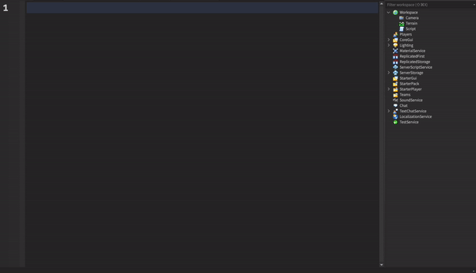

Introduction
What Are They?
Script Commands are comments that run code when you press ENTER. They can automate tasks, improve organisation, and optimise workflows.
Some examples of how Script commands can help you save time is by automatically inserting modules or importing boilerplate code into your script. In addition, Script Commands can help to optimise workflows as they make it easier for developers to automate tasks.
Script Commands are contained inside ModuleScripts, which are refered to as Plugins (not to be confused with Roblox Studio plugins). Script Commands Plugins must contain at least 1 main command but there isn't a minimum or maximum limit for the amount of sub-commands that a Plugin can have.
To learn how to create your own Script Commands Plugin click here
Heres a loosely written format that every Script Command follows:
Quick Demo
